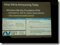
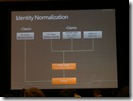
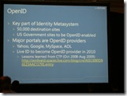

This morning at PDC 2009 I joined a session from Mr. Identity himself, Kim Cameron. Kim gave a very interesting update on Microsoft’s Identity strategies.
This morning at PDC 2009 I joined a session from Mr. Identity himself, Kim Cameron. Kim gave a very interesting update on Microsoft’s Identity strategies.
 For me, THE most important announcement was the release-to-web of the Windows Identity Foundation.
{kind=link}
With that, building claims-aware applications on the .NET platform for heterogeneous environments gets reality. And guess what, now at PDC 2009 they also announced what I’ve been waiting for a while now as customers are requesting that again and again:
-  Microsoft Dynamics CRM “5” will support claims based on WIF for on-premise, hosted and cloud-instances.
- SharePoint 2010 now has officially announced, that they will have claims-support built-into the SharePoint-platform. That means, using SharePoint in heterogeneous environments will get much easier. To give you a short impression, just see the image right to this bullet-point from a session I am attending right now on claims in SharePoint 2010...
{kind=link}
A few further announcements I found really interesting in addition to the “cases” SharePoint 2010 and CRM “5”, that were mentioned in the key note today, as well, are
-  Work on a REST-based authentication kit to support claims for simpler, REST-based scenarios (AJAX etc.) called OAuth Web Resource Authorization Protocol (WRAP) where Microsoft, Google and Yahoo are working together (interesting, but cool;))
- Support for Simple Web Tokens (SWT) based on OAuth WRAP.
- LiveID will become an OpenID provider during the calendar year 2010 as you can see in the image above.
- CardSpace and OpenID alignment in terms to be able to select an OpenID as an easy-to-understand information card from your digital CardSpace wallet in CY 2010.
{kind=link}
These are pretty cool news for anyone interested or working on claims-based security...